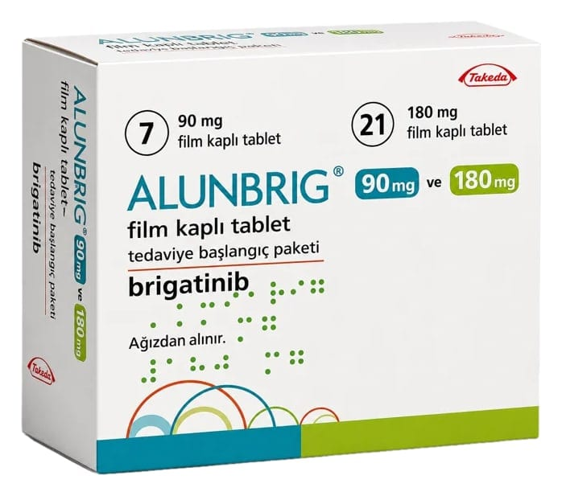

Alunbrig 90 mg Ve 180 mg Film Kaplı Tablet Tedaviye Başlangiç Paketi, 7 Adet 90 mg Ve 21 Adet 180 mg

Ne için kullanılır
KT · Bölüm 1ALUNBRİG, bir kinaz inhibitörü olarak adlandırılan ve bir tür kanser ilacı olan brigatinib etkin maddesini içermektedir.
ALUNBRİG, küçük hücreli dışı akciğer kanseri (KHDAK) olarak adlandırılan ileri aşama bir akciğer kanseri olan yetişkinlerin tedavisinde kullanılır. Akciğer kanseri anaplastik lenfoma kinaz (ALK) olarak adlandırılan anormal bir gen oluşumu ile ilişkili olan hastaların tedavisinde kullanılır.
Anormal gen, kanser hücrelerinin büyümesini uyaran ve kinaz olarak bilinen bir protein üretir. ALUNBRİG, bu proteinin etkisini bloke eder ve böylelikle kanserin büyümesini ve yayılmasını yavaşlatır.
Eğer küçük hücreli dışı akciğer kanseriniz ileri evre ve anaplastik lenfoma kinaz (ALK)-pozitif ise (yani kanser hücrelerinizde ALK adlı bir gende hata olduğu FISH testi, RT-PCR testi, yeni nesil dizileme (NGS) yöntemleri veya immünhistokimya testleri ile ile doğrulanmışsa), ALUNBRİG kanserinizin ilk basamak tedavisinde hastalık ilerlemediği sürece kullanılır.
Ayrıca, eğer küçük hücreli dışı akciğer kanseriniz vücudun başka kısımlarına yayılmış (metastatik) ve ALK-pozitif ise (yani kanser hücrelerinizde ALK adlı bir gende hata olduğu FISH testi, RT-PCR testi, yeni nesil dizileme (NGS) yöntemleri veya immünhistokimya testleri ile doğrulanmışsa) ve daha önce krizotinib adlı bir ilaçla tedavi edilmişseniz ALUNBRİG kanserinizin tedavisinde hastalık ilerlemediği sürece kullanılır.
Tedavi paketi içerisinde yer alan ALUNBRİG 90 mg film kaplı tablet bir yüzünde “U7” baskılı, yaklaşık 15 mm çapında, diğer yüzü düz, beyaz-beyazımsı, oval film kaplı tablet ve ALUNBRİG 180 mg film kaplı tablet bir yüzünde “U13” baskılı, yaklaşık 19 mm çapında, diğer yüzü düz, beyaz- beyazımsı, oval film kaplı tablet şeklindedir.
Her bir karton kutu, blister ambalaj içerisinde 7 adet 90 mg film kaplı tablet ve 21 adet 180 mg film kaplı tablet içerir.
Bu ürün inek sütünden elde edilen laktoz monohidrat içerir. Doktorunuza danışmadan, ilacınızı kullanmayı bırakmayınız.